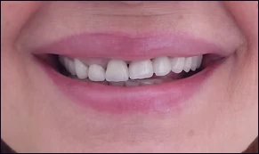
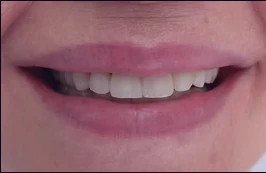
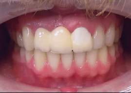
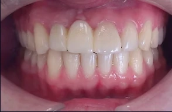
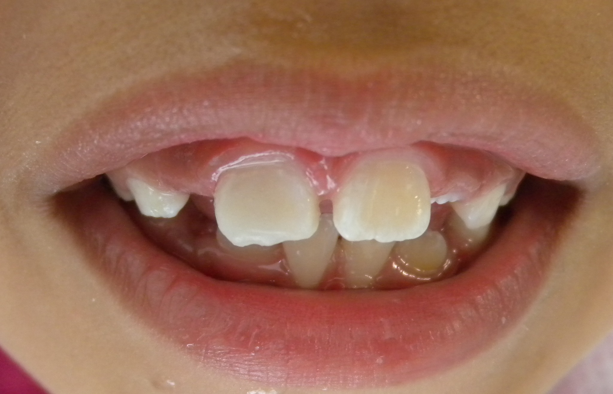
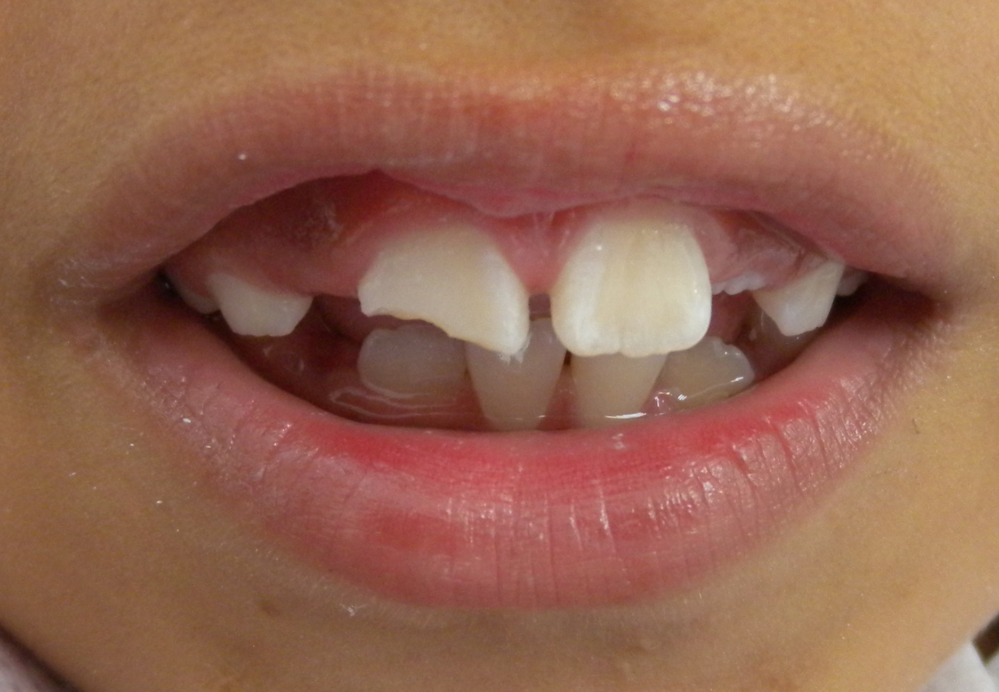
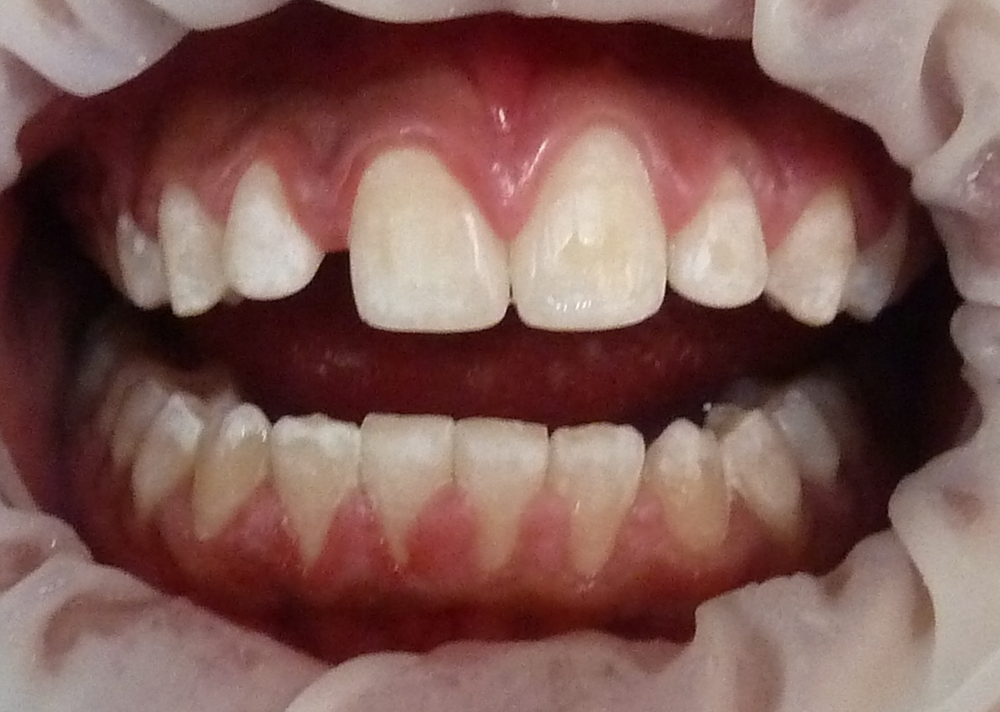
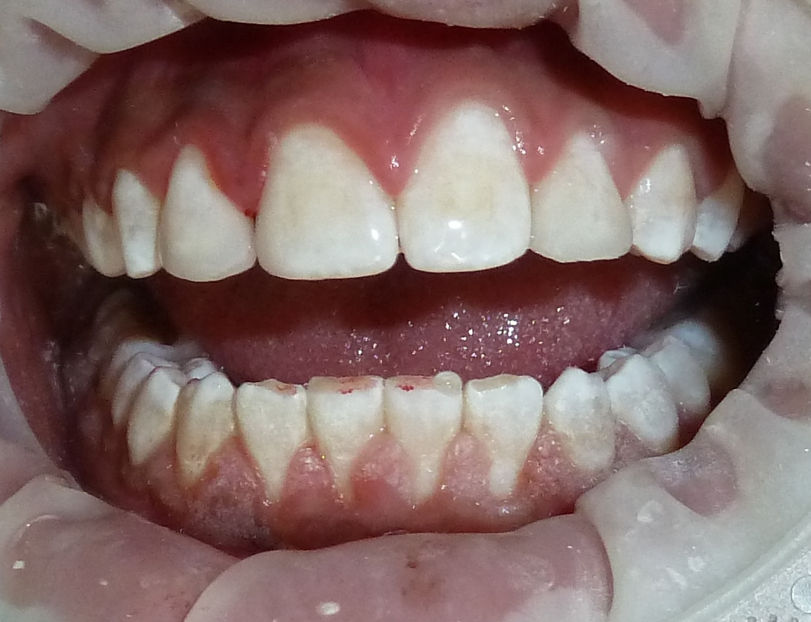

Caso clínico 1


RESTAURACIONES ESTÉTICAS
Las coronas de porcelana permiten restaurar dientes que requieren recuperar su forma, función y apariencia, buscando un resultado natural y personalizado.


OTRO CASO CLÍNICO
Un caso clínico independiente tratado con coronas de porcelana para recuperar función y armonía estética.


OTRO CASO CLÍNICO
Reconstrucción estética para recuperar la forma y apariencia de los dientes anteriores, conservando una integración natural con la sonrisa.


OTRO CASO CLÍNICO
Tratamiento estético individualizado para mejorar la forma y armonía de los dientes anteriores.


CASO CLÍNICO REAL
Cada tratamiento se planifica de forma individual de acuerdo con las condiciones y necesidades de cada paciente.
Caso clínico realizado en Lau Dental. Los resultados pueden variar según las condiciones de cada paciente.